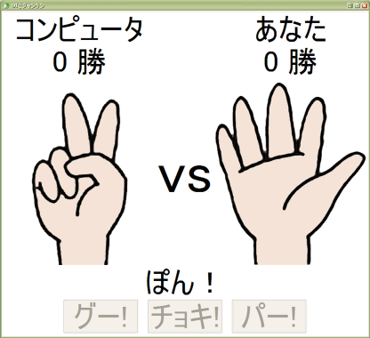

|
 |
|||||
S2JFace ドキュメントセットアップS2JFace は、Java SE 5.0 以降の環境で動作します。 また、S2JFace を利用するには、S2JFace 本体の他に以下のプロダクトが必要です。 (それぞれ、ダウンロードサイトからダウンロードしてください)
具体的には、以下のJarファイルがクラスパスに通っている必要があります。
また、S2JFace では GUIツールキットとして SWT を 利用します。そのため、Javaの起動オプションに以下の設定を追加する必要があります。 -Djava.library.path=(SWTライブラリのパス) ここで、「SWTライブラリのパス」とは、swt-xxx-yyyy.dll が存在するパスです。 これらのファイルは S2JFace 配布アーカイブの lib ディレクトリに添付されているので、 たとえば以下のように指定してください。 -Djava.library.path=c:/s2-jface-0.1.0/lib参考までに、上記をまとめた Java の起動オプションは、以下のようになります。 java -cp lib/s2-jface-0.1.0.jar;lib/eclipse-common-1.0-SNAPSHOT.jar;lib/jface-3.2.0.jar; lib/swt-win32-win32-x86-3.2.0.jar;lib/core-commands-3.2.0.jar;lib/equinox-common-3.2.0.jar; lib/s2-framework-2.4.7.jar;lib/s2-extension-2.4.7.jar;lib/aopalliance-1.0.jar; lib/commons-logging-1.1.jar;lib/geronimo-j2ee_1.4_spec-1.0.jar;lib/javassist-3.4.ga.jar; lib/ognl-2.6.7.jar;lib/s2-tiger-2.4.7.jar -Djava.library.path=c:/s2-jface-0.1.0/lib (実行するアプリケーションのメインクラス) S2JFaceの提供する機能S2JFaceは以下の機能を提供します。
画面表示機能S2JFaceでは、画面定義情報が記述されたXMLファイルを読み込んで、画面を表示することができます。 これにより、画面表示のための面倒なコーディングを行わなくとも、GUI画面を簡単に作成することができます。 残念ながら、現在のところ、S2JFace の画面定義を作成するにはある程度 SWT に関する知識が必要になります。 (とはいっても、そんなに難しいものではありませんが・・・) しかし、将来的には SWT の知識がなくても、画面定義ファイルを作成できるよう、簡便化していく予定です。 なお、S2JFace は現在開発中であるため、ここで紹介する画面定義 XML の仕様は 将来変更される可能性があります。何卒、ご了承ください。 さて、実際に画面定義 XML の例を見てみましょう。
<?xml version="1.0" encoding="UTF-8"?>
<template xmlns="http://s2jface.sandbox.seasar.org">
<window id="janken" title="DIでジャンケン" image="container.gif" background="white">
<commonAttributes background="white" foreground="black" fontHeight="50"/>
<gridLayout numColumns="3" marginHeight="5" marginWidth="5">
<gridData horizontalAlignment="CENTER" verticalAlignment="CENTER" />
</gridLayout>
<label text="コンピュータ" />
<composite />
<label text="あなた" />
<label id="computerWinLabel" text="0 勝" />
<composite />
<label id="playerWinLabel" text="0 勝" />
<label id="computerHandImage" image="blank" />
<label text="vs" fontHeight="100">
<gridData verticalAlignment="CENTER"
grabExcessHorizontalSpace="true" />
</label>
<label id="playerHandImage" image="blank" />
<label id="messageLabel" text="じゃんけん・・・" alignment="CENTER">
<gridData horizontalSpan="3" horizontalAlignment="FILL"/>
</label>
<composite>
<fillLayout spacing="20" marginWidth="20" />
<gridData horizontalSpan="3" />
<button id="guButton" text="グー!" />
<button id="cyokiButton" text="チョキ!" />
<button id="paButton" text="パー!" />
</composite>
</window>
</template>
たとえば、このような画面定義XMLファイルからは、以下のような画面が表示されます。

S2JFace の画面定義XMLファイルは、XML Schema で定義されています。スキーマファイルは、配布アーカイブ内の /s2-jface-0.1.0/src/main/resources/org/seasar/jface/component/factory/s2jface.xsd にあります。 Eclipse-WTP 付属の XML エディタなど、XML Schema によるタグ補完に対応している XML エディタを使用すれば、 補完機能により快適に XML を作成することができます。(なお、GUI による画面定義エディタは将来提供予定です) 画面定義 XML の構造S2JFace の画面定義 XML は、1つの画面について1つのXMLファイルが対応し、template 要素をルートとします。 template 要素の配下には、必ず window 要素を記述します。window 要素は、その名の通りウィンドウを表示するための要素です。 id 属性では、画面の名前を指定します。これは、画面毎にユニークな値を指定します。 title 属性では、ウィンドウに表示するタイトルを、backgroud 属性では、ウィンドウの背景色を指定しています。 また、image 属性でウィンドウに表示するアイコンを指定することもできます。 window 要素の配下にある commonAttributes 要素では、window 要素の配下にある他の GUI コンポーネント(label や button など) に共通な属性を指定することができます。 background や forground、fontHeight など、共通で指定したい属性は commonAttributes 要素で指定しておくと、 いちいち指定する必要がありません。 次の gridLayout 要素は、GUI 部品を並べるためのレイアウトを指定する要素です。gridLayout を指定すると、 SWT の GridLayout が window 要素の配下に適用されます。 GUI 部品の配置は、各部品の x 属性、y 属性で絶対座標を指定することができますが、 ウィンドウを可変サイズにしたアプリケーションでは、レイアウトを利用した方がウィンドウのサイズに従って 部品が再配置されるため、見栄えが良くなるという利点があります。 gridLayout の各属性は、SWT の GridLayout とまったく同じ属性が指定できますので、 詳細は GridLayout の APIリファレンスをご覧ください。 (このあたりが SWT の知識が必要となる所以です) 現在、S2JFace では、RowLayout、FillLayout、GridLayout の 3 種類が利用できます。 SWTのレイアウト指定については、こちらのサイトが参考になるでしょう。 次の label 要素は、文字通りテキストラベルを表示するためのものです。text 属性で指定した文字列が表示されます。 composite 要素は通常、他の GUI 部品を格納するためのコンテナとして利用します。 composite 要素には、window 要素と同じように commonAttributes や レイアウトが指定できます。 (SWTをご存じの方は、SWT における Composite クラスと同様と思っていただければ良いでしょう) ここでは、空の GUI コンポーネントとして配置しています。(GridLayoutで横3列の配置としているため) gridData 要素は、親要素の配置情報を詳細に指定するためのもので、これも SWT における gridData と全く同じです。 最後の button 要素はボタンを表示するためのものです。 id 属性は画面表示とは直接関係はありませんが、後で紹介する MethodBinding と密接な関係を持っています。 以上が、簡単な画面定義 XML の構造です。残念ながらリファレンスはまだ作成中ですが、 こちらのページを参考にすれば、だいたいの記述方法はわかると思います。 画面表示の方法S2JFace で画面定義 XML ファイルを表示するには、まず、画面定義ファイルがクラスパスに通っている必要があります。 また、画面で表示する画像ファイルなどのリソースも同様です。 画面を表示するには、2つの方法があります。1つめは、起動引数として指定する方法です。 以下のように、org.seasar.jface.S2JFace をメインクラスとしてJavaを実行し、第1引数に画面定義ファイルのパスを 渡すだけで画面が表示されます。 java -cp (クラスパス) -Djava.library.path=c:/s2-jface-0.1.0/lib org.seasar.jface.S2JFace org/seasar/jface/example/janken/DIdeJanken.xml この場合、画面定義ファイルは DIdeJanken.xml という名前で、 クラスパス中の org/seasar/jface/example/janken/ というディレクトリに存在します。 もう一つの方法は、プログラム内部から利用する方法です。 以下のように、S2JFaceクラスの openWindow メソッドの引数として画面定義XMLのパスを渡します。
S2JFace s2JFace = new S2JFace();
s2JFace.openWindow("org/seasar/jface/example/janken/DIdeJanken.xml");
メソッド・バインディングS2JFace では、画面上にボタンが押されるなどのイベントが発生した際、 S2Container に登録されたコンポーネント上のメソッドを呼び出すことができます。 これを、メソッド・バインディング(Method Binding)と呼びます。 メソッド・バインディングを利用すると、GUI プログラミングにありがちなリスナークラスを いちいち作成するという、面倒なコーディングから解放されます。 アクション・クラスメソッド・バインディングにより画面から呼び出されるクラスのことを、 S2JFace ではアクション・クラスと呼びます。アクション・クラスは画面と1対1となるように作成します。 今まで Web アプリケーションを作成してきた方は、Web アプリケーションにおける Action クラス とほぼ同じ位置づけと理解していただければよいでしょう。 アクション・クラスは、以下の命名規則で S2Container に登録します。 (画面の id (先頭を大文字にしたもの)) + Action たとえば、画面の id (window 要素の id です)が、 「hoge」の場合、「HogeAction」がアクション・クラスのコンポーネント名となります。 Convention over Configuration の考え方により、設定ファイルを書かなくても画面と POJO が結びつけられるわけです。 メソッドの呼び出し
メソッド・バインディングでは、GUI コンポーネントの持つ id が、呼び出すメソッドを指定する役割を
持ちます。
まず、アクション・クラス上で呼び出されるメソッドは、必ず たとえば、次のようなボタンがあった場合、 <button id="ok" text="OK" /> 以下のようなメソッドと対応します。
@EventListener
public void ok() {
}
また、次のように
@EventListener(id="ok")
public void onOkButton() {
}
イベントの指定
@EventListener(type=EventListenerType.MOUSE_MOVE)
public void label() {
}
type 属性で指定する値は、
イニシャライズ・メソッド
アクション・クラスに ウィジット・インジェクションGUI プログラミングでは、GUIオブジェクトの取り回しが煩雑で、しばしば汚いコードになりがちです。 S2JFace では、画面上の任意の GUI オブジェクトを、アクション・クラスへ自動的に代入することができます。 この機能を、ウィジット・インジェクション(Widget Injection)と呼びます。 ウィジット・インジェクションでは、GUI コンポーネントの id と、アクション・クラス上のフィールド名が 紐付きます。 たとえば、以下のような GUI コンポーネントがあった場合、 <button id="button" /> 以下のように id と同じ名前のフィールドに、対応する Button オブジェクトがインジェクションされます。 (もちろん、フィールドの型は GUI コンポーネントに対応する SWT の Widget である必要があります) また、インジェクションはフィールドに対して直接行われるため、setter メソッドを作成する必要はありません。 private Button button; このように、ウィジット・インジェクションを利用することでアクション・クラスに必要な GUI コンポーネントのオブジェクトを直接得ることができるため、ソースコードを簡潔に記述することができます。 暗黙のGUIコンポーネントS2JFace では、画面に対応した Shell オブジェクトが shell という名前で自動的に登録されます。 従って、以下のように shell フィールドを用意するだけで、Shell オブジェクトを得ることができます。 private Shell shell; バリュー・バインディングGUI アプリケーションにおいて、次のようば画面から値を入力する場面はよくあります。 S2JFace では、画面上のテキストフィールドに入力された値を、直接 POJO ヘバインドすることができます。 また、逆に画面の初期表示時にあらかじめテキストフィールドへ値を表示させておきたい場合、 POJO のフィールドからテキストフィールドに値をバインドすることもできます。 これらの機能を、バリュー・バインディング(Value Binding)と呼びます。 
フォーム・オブジェクトバリュー・バインディングの対象となるのは、フォーム・オブジェクトと呼ばれる POJO です。 フォーム・オブジェクトは、基本的に画面と1対1で対応しますが、新規作成画面と編集画面など、 複数の画面から共通の入力項目を扱う場合もあるため、複数の画面に対して1つのフォーム・オブジェクトを 割り当てることもできます。 フォーム・オブジェクトは、アクション・クラスと同様に S2Container へコンポーネントとして登録します。 その場合は、以下のような命名規則で名前を付けます。 (画面の id (先頭を大文字にしたもの)) + Form たとえば、画面の id (window 要素の id です)が、 「hoge」の場合、「HogeForm」がフォーム・オブジェクトのコンポーネント名となります。
一方、複数の画面に対応するフォーム・オブジェクトを作成する場合、アクション・クラスにアノテーションで
対応するフォーム・オブジェクトを指定します。
以下のように、
@Form(EmployeeEditForm.class)
public class EmployeeEditAction {
}
フォーム・オブジェクトには、画面上の GUI コンポーネントの id と同じ名前のフィールドを用意します。 上記の画面の画面定義 XML は、次のようなものです。
<?xml version="1.0" encoding="UTF-8"?>
<template xmlns="http://s2jface.sandbox.seasar.org">
<window id="edit" style="TITLE, CLOSE, PRIMARY_MODAL" title="従業員情報編集"
image="title" defaultButtonId="ok" defaultFocusId="ename">
<gridLayout numColumns="1">
<gridData horizontalAlignment="FILL" />
</gridLayout>
<composite>
<gridLayout numColumns="2">
<gridData horizontalAlignment="FILL" />
</gridLayout>
<label text="従業員No." />
<text id="empno" editable="false"/>
<label text="従業員名" />
<text id="ename" />
<label text="役職" />
<text id="job" />
<label text="管理者No." />
<text id="mgr" />
<label text="雇用日" />
<text id="hiredate" />
<label text="給与" />
<text id="sal" />
<label text="報奨金" />
<text id="comm" />
<label text="部署" />
<combo id="dept" style="DROP_DOWN, READ_ONLY" />
</composite>
<composite>
<fillLayout type="HORIZONTAL" />
<button id="ok" text="OK" />
<button id="cancel" text="キャンセル" />
</composite>
</window>
</template>
これに対応するフォームオブジェクトは、以下のような String 型のフィールドを持ちます。 フィールド名は、対応する GUI コンポーネントの id と一致するようにします。
private String empno;
private String ename;
private String job;
private String mgr;
private String hiredate;
private String sal;
private String comm;
インポート・バリュー・バインディング
画面上の GUI コンポーネントに入力された値をフィールドにバインドするには、
以下のようにフィールドに
@ImportValue
private String empno;
また、フィールド名と GUI コンポーネントの id が異なる場合、@ImportValue
アノテーションの id 属性で指定します。
@ImportValue(id="empno")
private String employeeNo;
このようにすることで、メソッド・バインディングによりアクション・クラスのメソッドが 呼び出されるタイミングで、バリュー・バインディングが行われます。 エクスポート・バリュー・バインディング
画面の表示した際、テキストフィールド等にフォーム・オブジェクトのフィールドの値を
あらかじめ表示させたい場合、フィールドに
@ExportValue
private String empno;
フィールド名と GUI コンポーネントの id が異なる場合、
また、
@ImportValue
@ExportValue
private String empno;
@ImportExportValue
private String empno;
コンボボックスやテーブルなど、複数の項目を表示するコンポーネントの場合、 項目に対応する DTO(POJO) を要素として持つ List や配列をフォーム・オブジェクトのフィールドに持たせます。
@ExportValue(id = "employeeTable")
private List&let;EmployeeDto> employees;
DTO のフィールドのうち、画面に表示するものには、 セレクション・バインディングコンボボックスやリストなど、複数項目を扱うコンポーネントでは、 選択状態をフォームオブジェクトに取得したり、逆に設定したりすることができます。 このような機能をセレクション・バインディング(Selection Binding)と呼びます。 インポート・セレクション・バインディング
先ほどの画面で、コンボボックス(id は dept)の選択項目を得るには、以下のように
@ImportSelection(id = "dept")
private DepartmentDto selectedDepartmentDto;
エクスポート・セレクション・バインディング
逆に、画面表示の際にあらかじめ選択項目を指定する場合、以下のように
@ExportSelection(id = "dept")
private DepartmentDto selectedDepartmentDto;
|
|||||||||||||||||||||||||||||||||||||||||||||||||||||||||||
| Copyright© 2004-2006, The Seasar Foundation and the others. All rights reserved. |